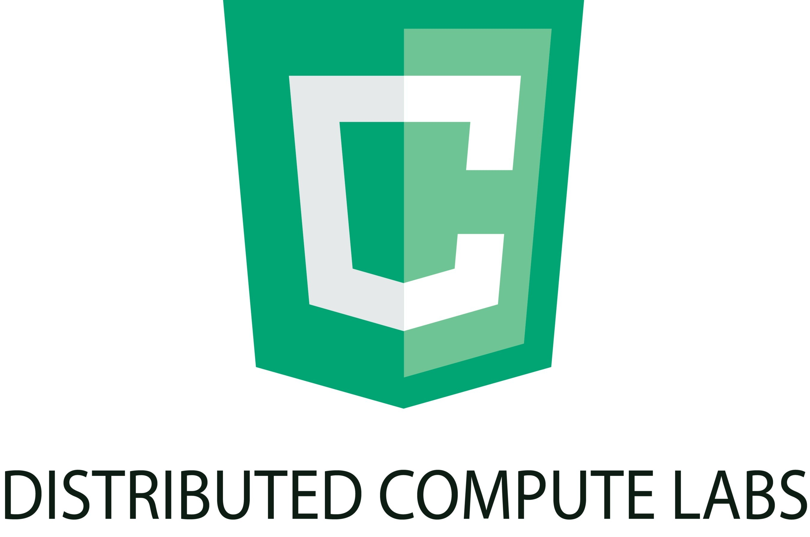

POWERED BY:
Exploring the community of people that drive collaboration platforms
Github brings people together to work for a common cause. Likewise, the contibutors keep the repositories together. Our app intends to visualize how contributors and repositories are interconnected with a graph. We took the top 50 repositories, as well as the contributors from these repositories and looked at how the contributors can connect the repositories. We wanted to ensure that the path between repositories was the shortest path; we decided that we would use DCP to help process the data to make the process faster and smoother. Once the data is processed, we display it on a graph to illustrate the contributors' connections to the repositories. As we can see, the people and their projects are interconnected as they bring the world together through code.
Below is the implementation we were able to come up with during the event, which uses a mix of Python, JavaScript, and HTML/CSS: